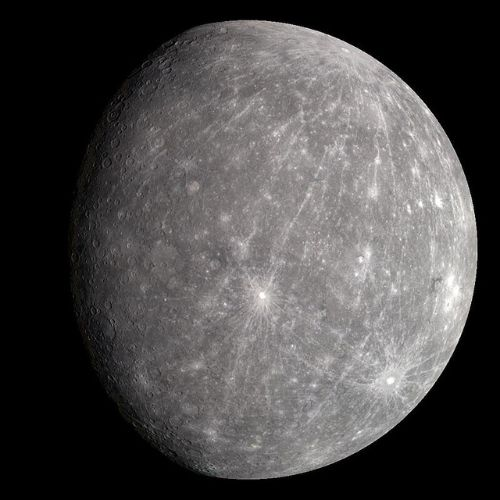
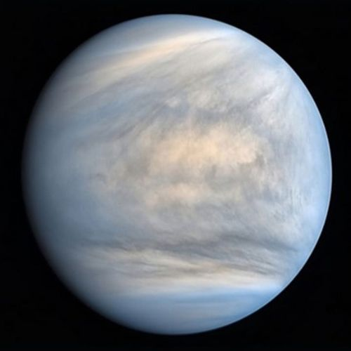
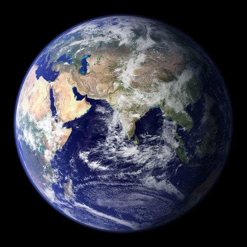
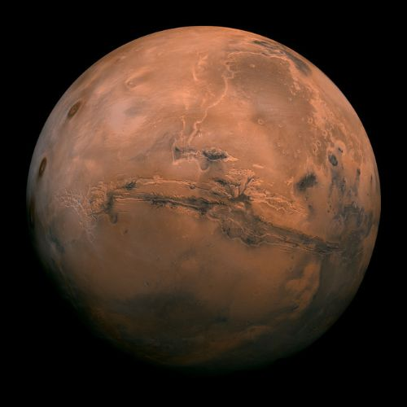
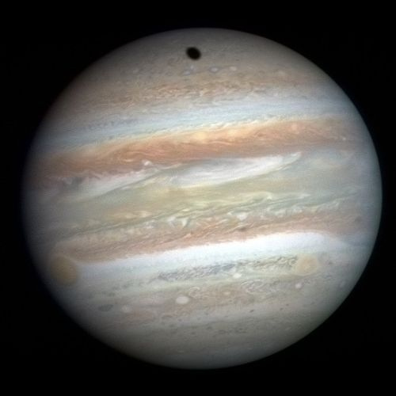
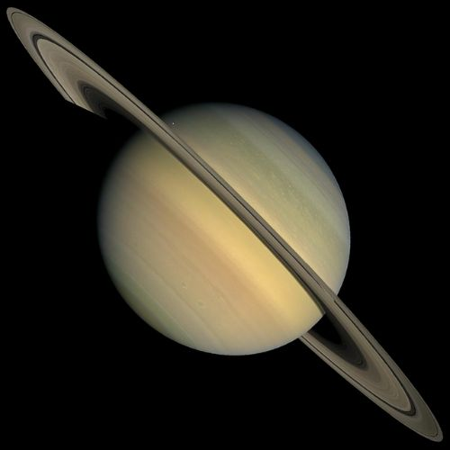
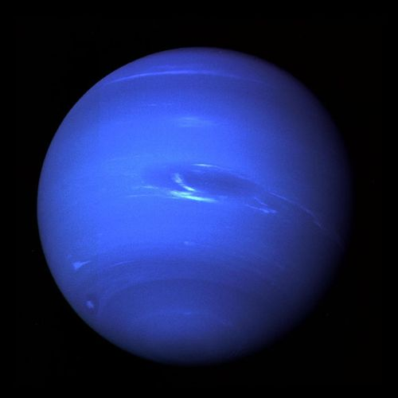

PLANETS
A planet is a large, rounded astronomical body that is neither a star nor its remnant. The Solar System has at least eight planets: the terrestrial planets Mercury, Venus, Earth and Mars, and the giant planets Jupiter, Saturn, Uranus and Neptune. These planets each rotate around an axis tilted with respect to its orbital pole. The word planet probably comes from the Greek planetai, meaning "wanderers".

MERCURY
MERCURY
The smallest planet in our solar system and nearest to the Sun, Mercury is only slightly larger than Earth's Moon.

VENUS
VENUS
Venus is the second planet from the Sun and is Earth’s closest planetary neighbor. It’s one of the four inner, terrestrial (or rocky) planets.

EARTH
EARTH
Our home planet is the third planet from the Sun, and the only place we know of so far that’s inhabited by living things.

MARS
MARS
Mars is the fourth planet from the Sun. A dusty, cold, desert world with a very thin atmosphere.

JUPITER
JUPITER
Fifth in line from the Sun, Jupiter is, by far, the largest planet in the solar system. More than twice as massive as all the other planets combined.

SATURN
SATURN
Saturn is the sixth planet from the Sun and the second-largest planet in our solar system. Adorned with thousands of beautiful ringlets.

URANUS
URANUS
Uranus is the seventh planet from the Sun, and has the third-largest diameter in our solar system. It was the first planet found with the aid of a telescope.

NEPTUNE
NEPTUNE